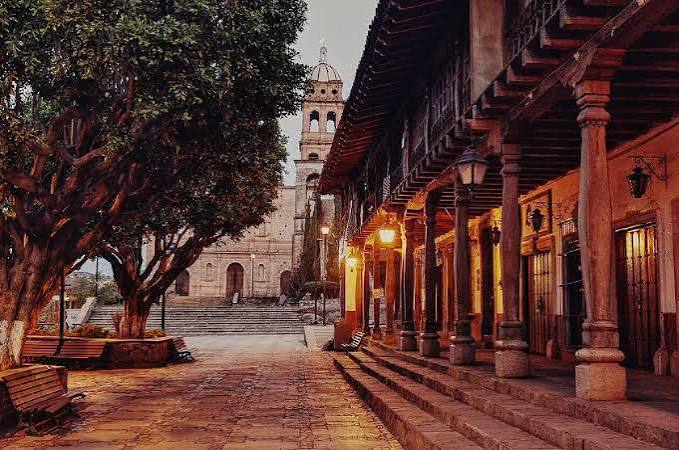
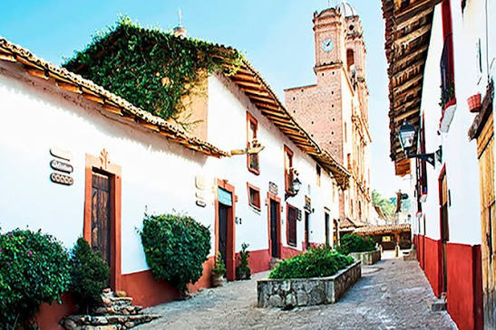

Tapalpa, cuyo nombre proviene del náhuatl y suele interpretarse como «tierra
de colores» o «lugar elevado», tiene sus orígenes asentados en el pasado
prehispánico de la sierra de Jalisco, donde estuvo habitada principalmente
por comunidades otomíes y tlayólotl antes de la llegada de los españoles.
Durante el período de la Conquista y la evangelización en el siglo XVI, Alonso
de Avalos ingresó a la región y el territorio pasó a formar parte de la Provincia
de Avalos; más tarde, los frailes franciscanos asumieron la evangelización de
la población local y comenzaron la edificación de los primeros templos, entre
los que destaca el Templo Viejo de San Antonio de Padua, una joya
arquitectónica construida con piedra de la región. A lo largo de la época
colonial, Tapalpa se consolidó como un apacible pueblo serrano impulsado
por la ganadería, la agricultura de montaña, la explotación forestal y la
manufactura artesanal, manteniendo un estilo urbano caracterizado por
casonas de adobe, fachadas blancas, zócalos de teja y tejados a dos aguas.
Con el paso de los siglos y la reorganización territorial del México
independiente, la localidad fue designada como municipio, conservando
intacta gran parte de su arquitectura vernácula y sus tradiciones culturales.
Durante el siglo XX, Tapalpa comenzó a proyectarse a nivel nacional como un
destacado destino turístico por sus paisajes boscosos, sus formaciones
rocosas como Las Piedrotas y su patrimonio histórico, reconociéndose
oficialmente como Pueblo Mágico en el año 2002, estatus que celebra su
valor cultural, arquitectónico y natural dentro del estado de Jalisco.

